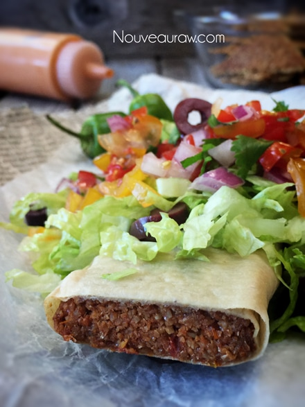
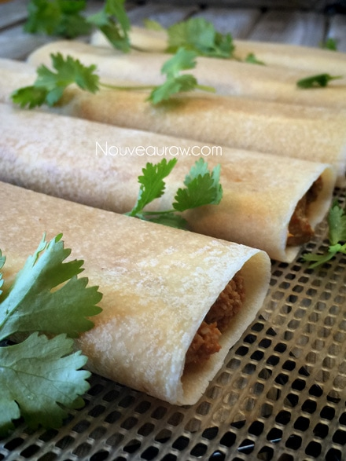
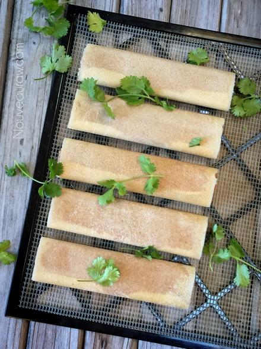
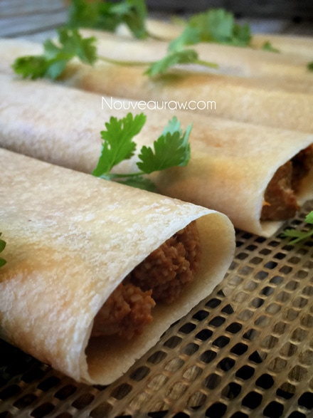
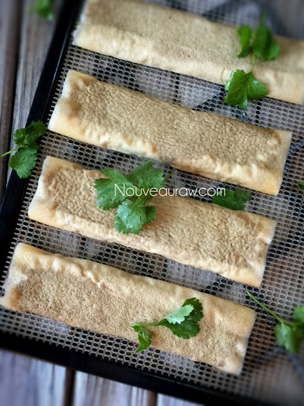
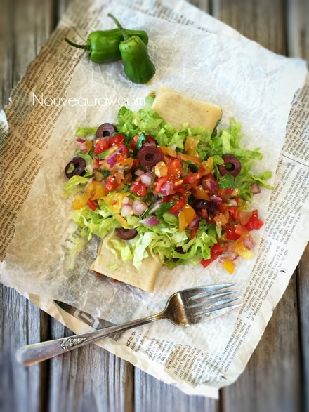
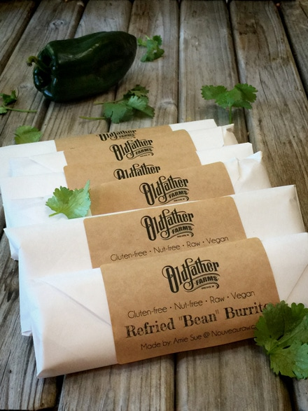

Refried “Bean” Burrito
– raw, nut-free, gluten-free –
Calling all Mariachi singers! This burrito deserves a celebration, a sombrero, and a hungry tummy. I can’t sing worth “refried” beans, I lost my sombrero but my tummy is hungry. One of out of three qualifies me.
First of all, I want you to know that no beans were harmed in this recipe… they weren’t fried or refried… heck their presence isn’t even here. So what makes it taste like a refried bean burrito? Sun-dried tomatoes, sunflower seeds, and a few select spices.
I’d like to be all humble and say that they aren’t anything spectacular BUT for me, a woman who doesn’t eat fried foods, beans, or flour tortillas…. this recipe hit a home run. And as silly as it may sound, this burrito puts a smile on my face and makes me feel apart of my Mexican heritage, that I really don’t have… I just claim to due to my love affair with Mexican food.
In case you are wondering, and you haven’t scrolled down to scan through the ingredient list… the “flour tortilla” is actually a coconut wrap. After pulling the burrito out of the dehydrator, I couldn’t even detect any coconut taste from the wrap. It wasn’t sticky, slipper or fragile… the perfect substitution for a tortilla.
These burrito freeze perfectly, making a wonderfully raw, vegan, healthy kitchen staple. They also travel well and can be eaten right out of your hand.
Garnish with shredded lettuce, raw cheese sauce, guacamole, raw sour cream, and pico de gallo (PEE-coh-deh-GAH-yo). Which is made with finely diced raw tomatoes, onions, lime juice and cilantro. You can really top it with whatever floats your boat. Enjoy and please comment below. I would love to hear if you try this recipe. Blessings, amie sue

Ingredients:
yields: 5-6 burritos
“Refried beans:”
- 2 cups raw sunflower seeds, soaked
- 1 cup sun-dried tomatoes, re-hydrated
- 1 cup water, soak water
- 2 Tbsp olive oil
- 1 Tbsp paprika
- 1 Tbsp ground cumin
- 1 tsp onion powder
- 1 tsp garlic powder
- 1/2 tsp cayenne powder
- 1/2 tsp Himalayan pink salt
Coconut wraps:
- 2 cups young Thai coconut meat
- 1 1/2 cups coconut water
- 1/4 tsp Himalayan pink salt
- OR use store-bought raw coconut wraps (here)
Preparation:
Coconut wraps:
- You can purchase raw coconut wraps (here) if you are short on time or resources.
- To make homemade wraps:
- Place the coconut meat, water, and salt in the blender.
- Blend until creamy smooth, you don’t want it lumpy or gritty.
- Pour the batter onto the non-stick sheet that comes with the dehydrator.
- Spread it evenly across the sheet into one large square.
- You will cut it into quarters after it has dried.
- Dry at 115 degrees (F) for roughly 4 hours or until it is dry enough to peel off.
- Flip over onto the mesh sheet and dry for about 1 hour or until it isn’t tacky to touch.
- Store in a large zip-lock bag, placing parchment paper in between each piece.

“Refried beans:”
- Sunflower seeds – soak in 4 cups of water for 4+ hours. Rinse and drain.
- The soaking process helps to reduce the phytic acid which can be upsetting to the tummy.
- If you already have soaked and dehydrated sunflower seeds on hand, you can use them without re-soaking them.
- Sun-dried tomatoes – soak in 2 cups water for 30+ minutes. Drain and keep the soak water to add in later.
- After soaking the sunflower seeds and sun-dried tomatoes, drain them and place in the food processor, fitted with the “S” blade. Process till they start to break down.
- Add water, olive oil, paprika, cumin, onion powder, garlic powder, cayenne, and salt. Process until it is almost smooth but with a little texture, much like refried beans.
- Store extra (if any) in an airtight container in the fridge for 3-5 days.
Assembly:
- Lay a coconut wrap on the countertop, place 1/2 cup of the refried “beans” on one end of the wrap.
- Fold the wrap over and roll into a tube.
- Gently flatten, pressing the filling towards the edges.
- Place the burrito on the mesh sheet that comes with the dehydrator.
- Dry at 145 degrees (F) for 1 hour, then reduce to 115 degrees (F) for 18 hours.
- Why do I start the dehydrator at 145 degrees (F)? Click (here) to learn the reason behind this.
- Enjoy warm!
- Store leftovers in the fridge for 5-7 days. OR wrap in freezer-paper, slide into a freezer-safe ziplock bag and freeze for a month.


Here they are dehydrated…

Ready for devouring!

All ready for the freezer.

© AmieSue.com